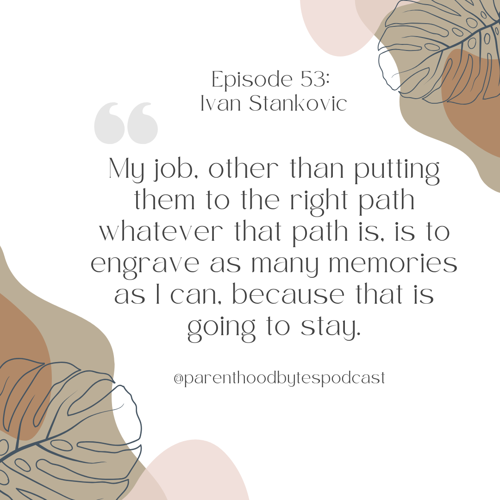

Episode 53: Ivan Stankovic

Episode Notes
In this episode, we chat with Ivan Stankovic, a Technical Program Manager at a major cloud provider. Ivan offers valuable insights into parenting in a tech-driven world, sharing how he manages screen time for his two kids, aged 16.5 and 13.5. He discusses the unique challenges of raising a middle schooler and a teenager taking college courses, emphasizing the balance of setting boundaries while allowing freedom. Ivan reflects on his family support system, including his parents, his in-laws and the partnership with his wife in parenting decisions. He also shares experiences from parenting during the pandemic and how his family navigated schooling during those challenging times, all while creating lasting memories and focusing on education.